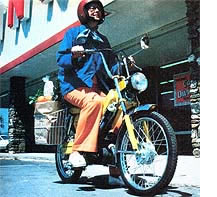
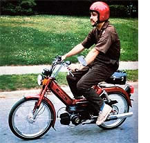
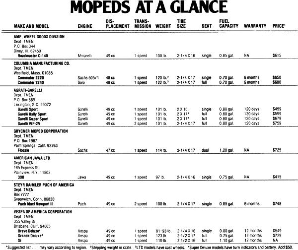
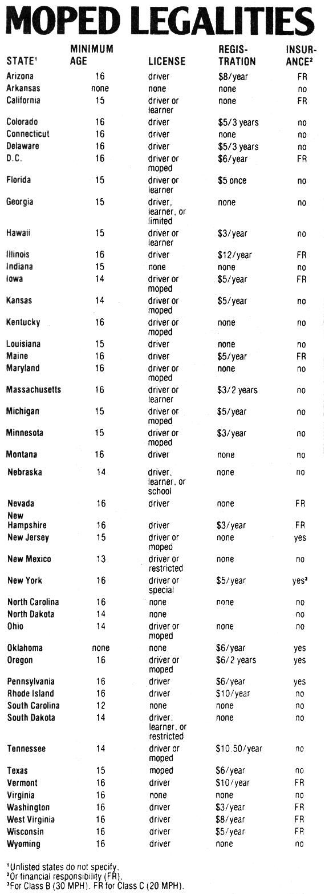

Here's a way to save fuel and have fun at the same time!
Judging by the mail that MOTHER receives, her readers are vitally concerned about energy conservation ... and are willing to try a variety of approaches to reduce their consumption of fossil fuel. You've let us know, for example, that many of you are not satisfied until you're sure your car is getting every possible mile per gallon, and that as a group you're among our nation's pioneers in the switch to renewable solar fuels. ( Of course, while you're busy saving energy, you also plan to bank a few extra dollars as a result of that conservation.)
However, people who are deeply involved in the throes of their personal energy crises sometimes find it difficult to see the simplest way to cut high gasoline bills: Stop driving your gas guzzling four wheeler!
Mopeds motorized bicycles have become quite the rage in the last couple of years (both as primary vehicles and as occasional alternative transport). The major reason for their popularity is obvious. Having an average fuel economy rating of about 100 MPG, a moped will use from one-quarter to one-tenth the gasoline that an auto would. Thus for every 1,000 miles of motoring that you can divert to an economy two wheeler, you could depending upon the MPG rating of the car that would otherwise cover those miles be saving as much as $100.
Europeans have recognized the economy and convenience of mopeds for decades. The combination of consistently high gas prices, expensive vehicle registration fees, and crowded highways that prevails across the Atlantic has made the two wheeled option appear very attractive. And lately mopeds have begun to make sense here in the U.S.A., for many of the same reasons.
Besides the tremend ous fuel savings that can be achieved with a motorized bicycle, mopeds have a further advantage in that they don't need to be registered in many states, while only five states require that the little vehicles even carry insurance coverage . . . though financial responsibility is often stipulated.
Of course, it's not likely that buying a moped will let you totally abandon your auto. After all, the tiny scooters really don't belong on major highways, and their small size and lack of speed cause them to become a bit tiring when used for journeys of more than 20 miles. But when you think about it, there are numerous short trips such as the inevitable spur of the moment jaunts to the grocery or hardware storethat certainly don't require the use of three or four thousand pounds of vehicle.
Better yet, you might discover that riding a moped is fun . . . you'll find that two wheeled travel brings you closer to your environment, allowing you to smell the summer flowers and new mown hay.
What's more, mopeds are amazingly easy to ride. Automatic transmissions that shift with buttery smoothness are typical though some have two speeds, while others provide only a single transmission ratio and operation of the controls quickly becomes second nature.
So take a look through the specifications of the machines listed in the "Mopeds at a Glance" chart that accompanies this article, and search out a vehicle that suits your particular needs. (All the units listed are equipped with both front and rear hydraulic suspension, but country dwellers might want to opt for a full sized seat, where available, to provide an additional measure of comfort on bumpy byways.)
Finally, when you think you're ready to buy, check out the dealer carefully: While mopeds are well known for their reliability, being unable to get a needed part can leave you with a zero MPG vehicle. And when you mount your new moped, always wear protective clothing such as substantial shoes, a long sleeved shirt, and a helmet to assure that your easy on the budget riding is safe as well as economical!
|
 STAFF PHOTOS A moped equipped with baskets such as this Garelli two-speed model is perfect for minor trips to the grocery. |
 At over 100 MPG, a Puch Maxi Newport 11 two-speed moped can bean efficient and pleasant mount for a short to medium distance commute to work. |
 |
|
 |
|
|